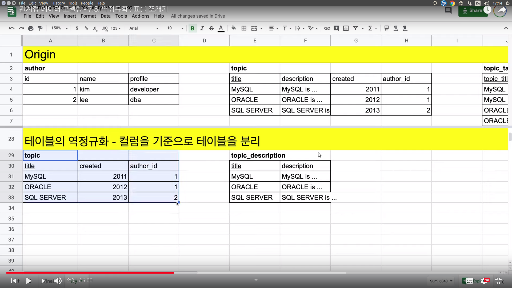
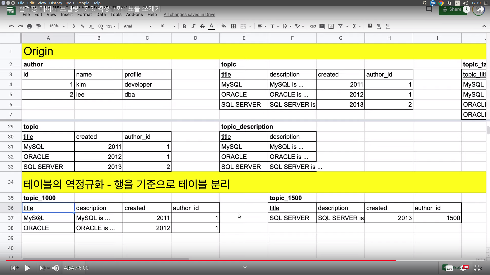

This is personal study note
Copyright and original reference:
https://www.youtube.com/watch?v=oIYoS--DtbI&list=PLuHgQVnccGMDF6rHsY9qMuJMd295Yk4sa
================================================================================
Split table, based on column or row
================================================================================
If description is large data, you can split it into other table

This is also called "sharding"
================================================================================
Split table, based on row
If there are many authors, split authors
1-1000: topic_1000 table
1001-2000: topic_2000 table

================================================================================


 Computation is high due to frequent JOIN
================================================================================
To resolve that issue (3 joins to 2 joins), alter topic_tag_relation table
Computation is high due to frequent JOIN
================================================================================
To resolve that issue (3 joins to 2 joins), alter topic_tag_relation table
 ================================================================================
================================================================================